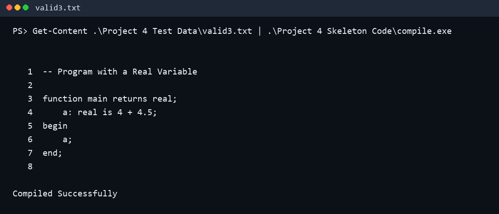
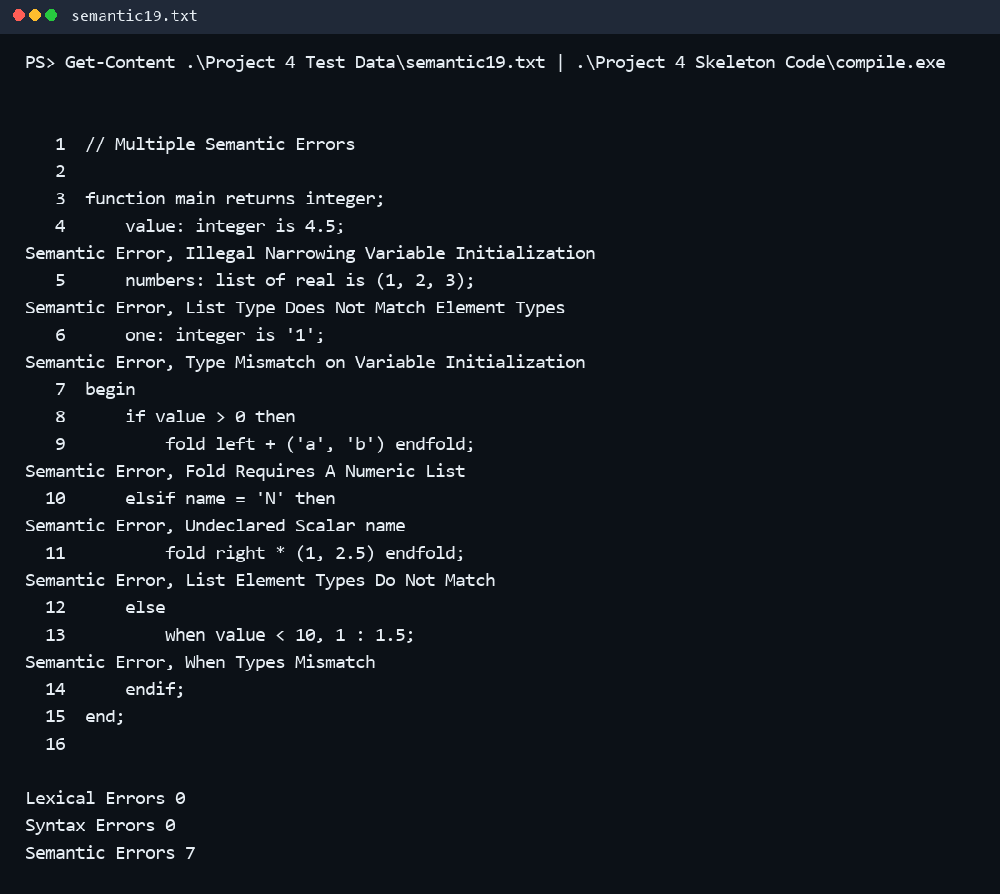
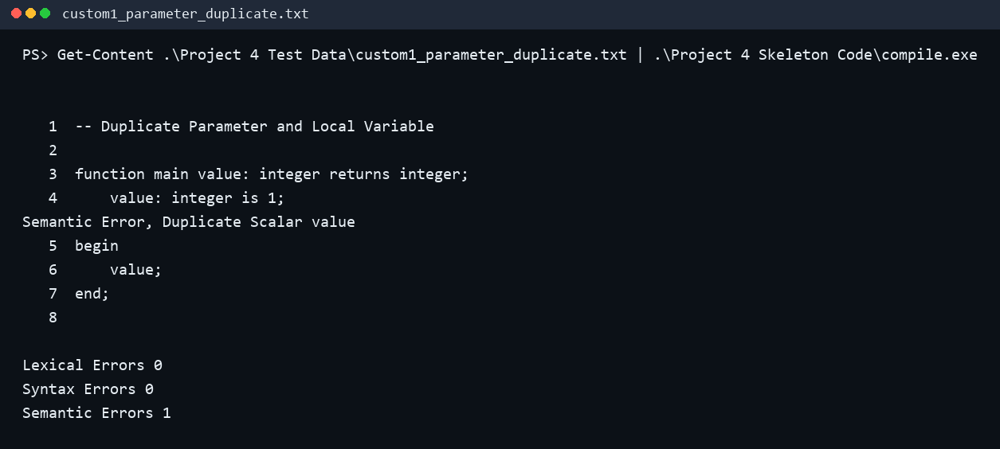
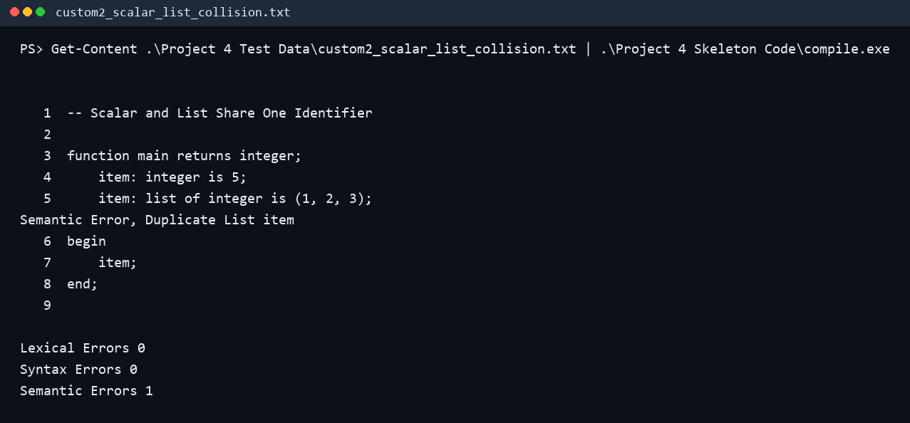
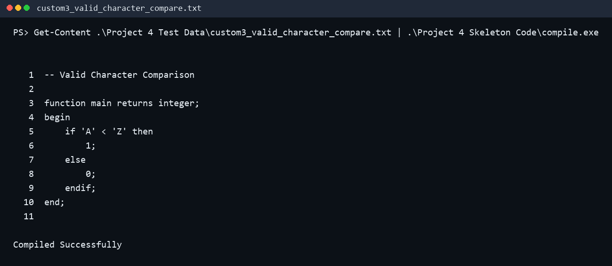
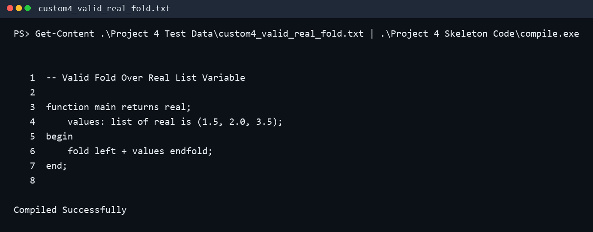

CMSC 430 Project 4 Documentation
This report accompanies the cleaned source archive for Project 4. The full regression run of the supplied tests is saved in Project 4 Output.txt, and the full run of the custom tests created for this report is saved in Project 4 Custom Output.txt.
Discussion of Approach
I approached Project 4 by treating it as a semantic-analysis extension of the earlier compiler work. The supplied skeleton already handled the basic parse structure, so I first mapped each rubric item to the file where it belonged: token-level updates in scanner.l, grammar and semantic actions in parser.y, symbol lookups in symbols.h, and type checking helpers in types.cc and types.h. That let me work feature by feature without losing track of where each semantic rule should be enforced.
The first group of changes focused on the type system. I added support for real types, hexadecimal integer literals, and arithmetic coercion from integer to real inside arithmetic expressions. From there, I expanded the semantic checks so the compiler could detect mismatched variable initializations, invalid function returns, invalid list declarations and subscripts, incorrect use of arithmetic and remainder operators, invalid comparisons between characters and numeric expressions, and type mismatches across when, switch, if, and fold constructs.
The second group of changes focused on symbol-table behavior. I kept separate symbol tables for scalars and lists so the compiler could continue to distinguish the two forms of identifiers, then added duplicate-name checks before insertion. That made it possible to detect duplicate scalar declarations, duplicate list declarations, and collisions between names already used in the other table. Parameter declarations reuse the same scalar table, so duplicate parameter and local-variable names are caught the same way.
I verified the implementation in two layers. First, I rebuilt the compiler from source using Flex, Bison, and g++. Second, I ran the supplied regression tests that cover the rubric items from the project handout. After the official suite matched the expected outputs, I added custom tests of my own to cover name-collision edge cases and valid semantic behavior that was not shown directly in the provided handout output. That extra pass gave me more confidence that the semantic checks were working for both required and self-created cases.
Test Plan
Supplied Regression Suite
The provided Project 4 test set was used as the primary regression suite. Together these tests cover the real-type additions, arithmetic coercion, symbol-table errors, type-checking errors, and the multiple-error case required by the rubric.
| File | Aspect Tested | Expected Outcome |
|---|---|---|
valid1.txt | Accepts real variables and real return types. | Compiled successfully. |
valid2.txt | Treats hexadecimal literals as integers. | Compiled successfully. |
valid3.txt | Performs integer-to-real coercion in arithmetic expressions. | Compiled successfully. |
valid4.txt | Allows widening from integer to real in assignments and returns. | Compiled successfully. |
semantic1.txt | Type mismatch on variable initialization. | One semantic error. |
semantic2.txt | when branch type mismatch. | One semantic error. |
semantic3.txt | Non-integer switch expression. | One semantic error. |
semantic4.txt | Mismatched case result types. | One semantic error. |
semantic5.txt | Arithmetic operator used with a character value. | One semantic error. |
semantic6.txt | Undeclared scalar identifier. | One semantic error. |
semantic7.txt | Undeclared list identifier. | One semantic error. |
semantic8.txt | List elements with mixed types. | One semantic error. |
semantic9.txt | Declared list type differs from element type. | One semantic error. |
semantic10.txt | List subscript is not an integer expression. | One semantic error. |
semantic11.txt | Character literal compared to numeric expression. | One semantic error. |
semantic12.txt | Exponentiation and unary negation used with characters. | Two semantic errors. |
semantic13.txt | Remainder operator used with a real operand. | One semantic error. |
semantic14.txt | if, elsif, and else branches do not match in type. | One semantic error. |
semantic15.txt | fold applied to a non-numeric list. | One semantic error. |
semantic16.txt | Narrowing during variable initialization. | One semantic error. |
semantic17.txt | Narrowing function return. | One semantic error. |
semantic18.txt | Duplicate scalar and duplicate list declarations. | Two semantic errors. |
semantic19.txt | Multiple semantic errors in one program. | Seven semantic errors. |
semantic20.txt | Function return type mismatch. | One semantic error. |
Custom Tests Created for This Report
To strengthen the test plan beyond the supplied handout cases, I created four additional programs. These custom tests target name-collision edge cases and valid semantic behavior that complements the official suite.
| File | Aspect Tested | Expected Outcome |
|---|---|---|
custom1_parameter_duplicate.txt | Detects a duplicate scalar when a local variable reuses a parameter name. | One semantic error: duplicate scalar. |
custom2_scalar_list_collision.txt | Detects a duplicate identifier when a list reuses a scalar name. | One semantic error: duplicate list. |
custom3_valid_character_compare.txt | Confirms that character-to-character relational comparisons are legal. | Compiled successfully. |
custom4_valid_real_fold.txt | Confirms that fold accepts a numeric list variable of type real. | Compiled successfully. |
The four custom test source files are stored in Project 4 Test Data beside the supplied suite.
Representative Compiler Runs
The screenshots below show the compiler being run on both supplied and custom tests. The custom tests are included to demonstrate self-created verification beyond the instructor-provided regression suite.

valid3.txt, demonstrating integer-to-real coercion in arithmetic expressions.
semantic19.txt, demonstrating recovery and reporting of multiple semantic errors in one compilation.
custom1_parameter_duplicate.txt, showing that a parameter name cannot be reused by a local scalar declaration.
custom2_scalar_list_collision.txt, showing that a list identifier cannot reuse an existing scalar name.
custom3_valid_character_compare.txt, showing a valid character comparison that compiles successfully.
custom4_valid_real_fold.txt, showing a valid fold over a real list variable.Lessons Learned
The most important lesson from Project 4 is that semantic analysis is where the language rules start to feel real. The parser can accept a program that is syntactically well formed, but semantic analysis decides whether that program actually makes sense. Working through the project made the separation between syntax and meaning much clearer to me, especially in cases like valid versus invalid type coercion or valid versus invalid use of identifiers.
I also learned how useful it is to centralize semantic checks in helper functions instead of scattering complex logic throughout the grammar. Moving the semantic rules into functions such as checkAssignment, checkArithmetic, checkRelational, and the list-related helpers made the parser actions easier to read and made the behavior easier to verify with targeted tests. That organization reduced the chance of inconsistent error handling between similar grammar productions.
Another important lesson was that symbol-table testing needs to include collisions that are easy to overlook. The supplied tests covered duplicate scalars and duplicate lists, but adding custom tests around parameter-name reuse and scalar-list collisions helped confirm that the compiler rejects duplicates consistently across declaration contexts. That kind of targeted edge-case testing is especially valuable in compiler projects because a small oversight in scope or lookup logic can create confusing downstream errors.
Improvements That Could Be Made
- Add an automated regression script that runs every supplied and custom test case and compares the compiler output against expected results.
- Refactor the semantic helper functions into more clearly grouped categories, such as assignment checks, control-flow checks, arithmetic checks, and list checks.
- Extend the symbol-table layer to support nested scopes explicitly, which would make the design easier to reuse in later compiler phases.
- Add a packaging script that rebuilds the compiler, refreshes test outputs, and recreates the final submission archive in one command.
Submission Contents
The final Project 4 submission package produced for this repository includes the following deliverables:
CMSC 430 Project 4- Joe Merrill.zip: cleaned source archive containing only the required.l,.y,.cc,.h, andmakefilefiles.CMSC 430 Project 4-Joe Merrill.pdf: exported documentation report.Project 4 Custom Output.txt: full console output for the custom tests created for this report.